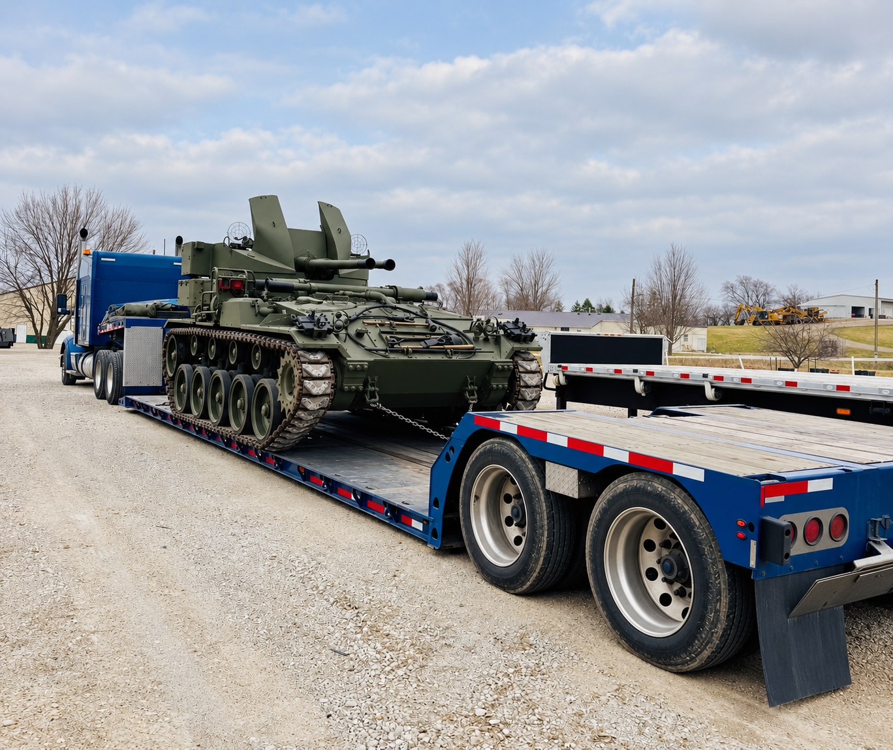
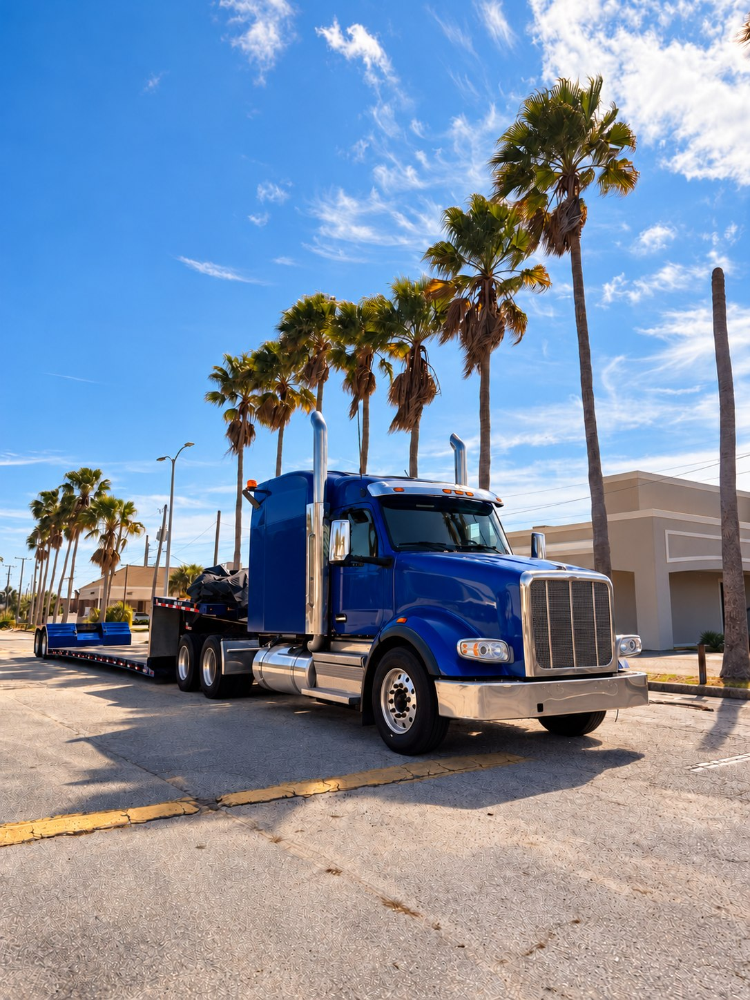

Городские перевозки
Доставка со склада, перевозка мебели и товаров по городу и области. Согласуем время подачи и особенности подъезда.
Обсудить маршрут →Тяжёлый груз, сложный маршрут или нестандартная задача — подберём транспорт и продумаем перевозку. За рулём — надёжные водители, на связи — ответственный за ваш груз.
Рассчитать перевозку ↗Стоимость и сроки согласуем до подачи машины

От нескольких коробок до полной машины.
Подберём подходящий вариант перевозки.
Доставка со склада, перевозка мебели и товаров по городу и области. Согласуем время подачи и особенности подъезда.
Обсудить маршрут →Отдельная машина для вашего груза между городами России. Маршрут, тип кузова и условия погрузки определяем заранее.
Рассчитать доставку →Когда груз не занимает целую машину. Проверим возможность совместной перевозки и согласуем подходящий срок доставки.
Подобрать вариант →Перевозка вещей, мебели и техники. Укажите этаж, наличие лифта и необходимость помощи с погрузкой в комментарии.
Спланировать переезд →
Перевозка начинается задолго до старта двигателя: с выбора транспорта, проверки маршрута и подготовки груза.
Обсуждаем габариты, точки погрузки и выгрузки, крепление и удобное время. Чтобы сложная задача стала понятным планом.
Обсудить вашу задачу ↗«Вектор Транс» — сервис организации грузоперевозок для частных клиентов и бизнеса. Начинаем с деталей: что везём, откуда забрать, куда доставить и какие условия важны.
Не обещаем одинаковую цену для всех грузов. Сначала уточняем вес, объём, маршрут и способ погрузки, затем согласуем стоимость и сроки.
Маршрут, описание груза и удобная дата.
Подбираем транспорт и согласуем условия.
Держим связь до завершения перевозки.
Расскажите о перевозке.
Свяжемся по указанному телефону, чтобы уточнить детали и рассчитать стоимость.
Для точного расчёта укажите вес, размеры груза и способ погрузки.
Оставьте телефон в форме заявки — менеджер свяжется с вами для обсуждения маршрута.
Городские и междугородние перевозки по России. Адреса загрузки и выгрузки согласуем индивидуально.
Имя, телефон и сведения о перевозке передаются ответственному за обработку заявок через Telegram для связи и расчёта доставки. Не указывайте платёжные данные и другую лишнюю личную информацию. Для уточнения или удаления заявки используйте тот же канал связи с менеджером.
Учебный проект. Название и описание услуг — демонстрационная концепция; условия реальной перевозки требуют отдельного согласования.